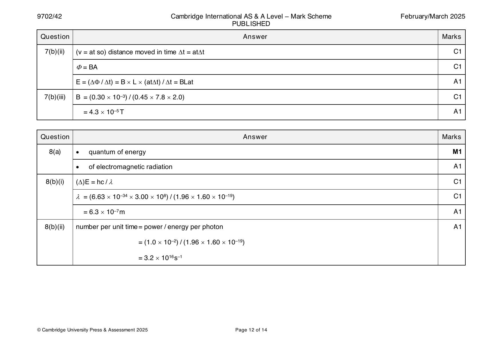
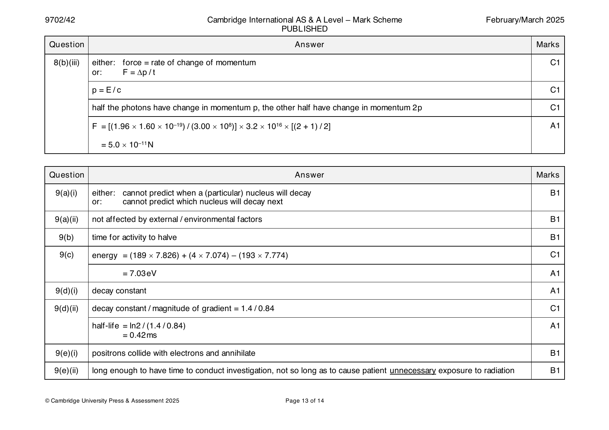
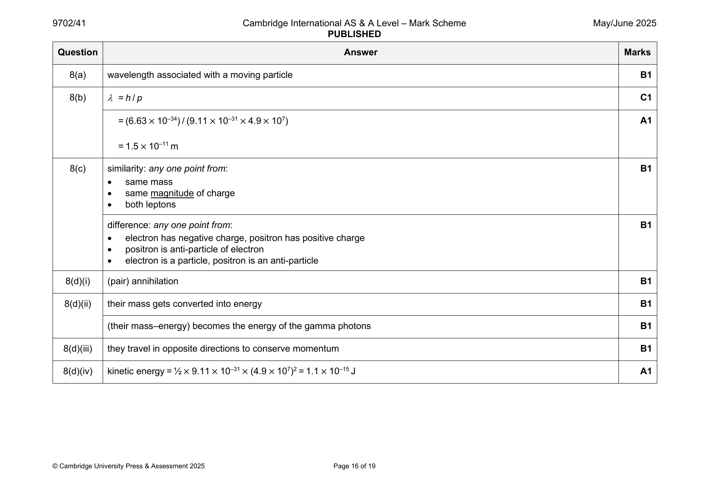
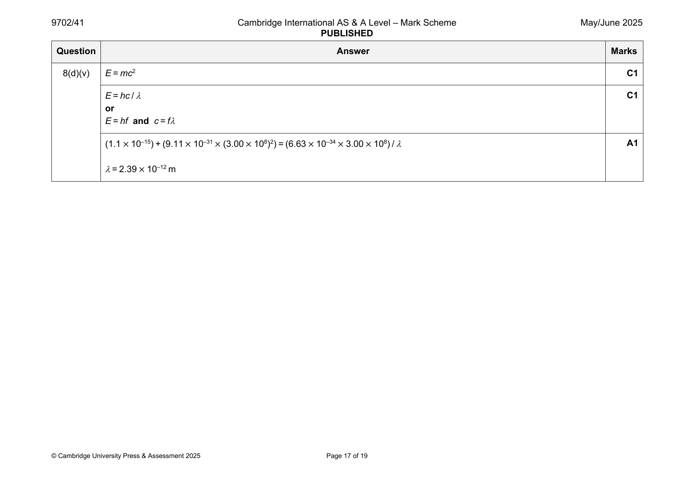

Try the new view →
9702-2021-mj-41-q12
May/June 2021 · Paper 41 · Question 12 · 8 marks
12(a) • frequency determines energy of photon B2
• intensity determines number of photons (per unit time)
• intensity does not determine energy of a photon
Any two points, 1 mark each
kinetic energy (of the electron) depends on the energy of one photon B1
12(b)(i) E = hc / λ C1
or
E = hf and c = fλ
E = (6.63 × 10–34 × 3.00 × 108) / (250 × 10–9) C1
(= 7.96 × 10–19 J) A1
= 5.0 eV
12(b)(ii) E = photon energy – work function C1
MAX
work function = 5.0 – 1.4 A1
= 3.6 eV
© UCLES 2021 Page 18 of 18
Official mark scheme pages: 18 · source PDF URL
9702-2021-mj-43-q12
May/June 2021 · Paper 43 · Question 12 · 8 marks
12(a) • frequency determines energy of photon B2
• intensity determines number of photons (per unit time)
• intensity does not determine energy of a photon
Any two points, 1 mark each
kinetic energy (of the electron) depends on the energy of one photon B1
12(b)(i) E = hc / λ C1
or
E = hf and c = fλ
E = (6.63 × 10–34 × 3.00 × 108) / (250 × 10–9) C1
(= 7.96 × 10–19 J) A1
= 5.0 eV
12(b)(ii) E = photon energy – work function C1
MAX
work function = 5.0 – 1.4 A1
= 3.6 eV
© UCLES 2021 Page 18 of 18
Official mark scheme pages: 18 · source PDF URL
9702-2021-on-41-q10
Oct/Nov 2021 · Paper 41 · Question 10 · 9 marks
10(a)(i) photoelectric effect B1
10(a)(ii) electron diffraction B1
10(b)(i) λ = h / p M1
h is the Planck constant A1
10(b)(ii) de Broglie (wavelength) B1
10(c)(i) ½mv2 = eV C1
½ × 9.11 × 10–31 × v2 = 1.60 × 10–19 × 4800 so v = 4.1 × 107 m s–1 A1
10(c)(ii) λ = h / mv C1
= 6.63 × 10–34 / (9.11 × 10–31 × 4.1 × 107)
= 1.8 × 10–11 m A1
© UCLES 2021 Page 14 of 15
Official mark scheme pages: 14 · source PDF URL
9702-2021-on-42-q09
Oct/Nov 2021 · Paper 42 · Question 9 · 9 marks
9(a)(i) emission of electrons (from a metal surface) B1
when electromagnetic radiation is incident (on electrons) B1
9a(ii) minimum energy required for an electron to leave surface B1
9(b)(i) threshold (frequency) B1
9(b)(ii) • photons are (discrete) packets of energy B2
• energy of photons depends on frequency (of EM radiation)
• electrons can only absorb a single photon (of energy)
Any two points, 1 mark each
emission only possible if photon energy is at least the work function B1
9(b)(iii) work function = hf = 6.63 × 10–34 × 6.93 × 1014 C1
0
= 4.59 × 10–19 (J) A1
= 4.59 × 10–19 / 1.60 × 10–19 (eV)
= 2.87 eV
© UCLES 2021 Page 15 of 19
Official mark scheme pages: 15 · source PDF URL
9702-2021-on-43-q10
Oct/Nov 2021 · Paper 43 · Question 10 · 9 marks
10(a)(i) photoelectric effect B1
10(a)(ii) electron diffraction B1
10(b)(i) λ = h / p M1
h is the Planck constant A1
10(b)(ii) de Broglie (wavelength) B1
10(c)(i) ½mv2 = eV C1
½ × 9.11 × 10–31 × v2 = 1.60 × 10–19 × 4800 so v = 4.1 × 107 m s–1 A1
10(c)(ii) λ = h / mv C1
= 6.63 × 10–34 / (9.11 × 10–31 × 4.1 × 107)
= 1.8 × 10–11 m A1
© UCLES 2021 Page 14 of 15
Official mark scheme pages: 14 · source PDF URL
9702-2022-m-42-q08
March 2022 · Paper 42 · Question 8 · 7 marks
8(a) h h M1
λ = or λ =
p mv
where h is the Planck constant and A1
p is the momentum (of particle) / mv is the momentum (of particle) / m is the mass (of particle) and v is the velocity (of
particle)
8(b)(i) (electron) diffraction B1
8(b)(ii) moving electrons behave like waves B1
8(b)(iii) spacing between atoms ≈ wavelength of electron B1
or
diameter of atom ≈ wavelength of electron
8(b)(iv) Any one of: M1
• wavelength has decreased
• electron had greater momentum
so (accelerating) p.d. was increased A1
© UCLES 2022 Page 12 of 17
Official mark scheme pages: 12 · source PDF URL
9702-2022-mj-41-q07
May/June 2022 · Paper 41 · Question 7 · 10 marks
7(a) quantum of energy M1
of electromagnetic radiation A1
7(b)(i) photoelectric effect B1
7(b)(ii) there is a frequency below which no electrons are emitted B3
or
threshold frequency = 5.4 1014 Hz
work function of the metal = 3.6 10–19 J (or 2.2 eV)
E increases (linearly) with (increasing) frequency
MAX
gradient of the line is the Planck constant
or
gradient of the line is 6.7 10–34 J s
Any three bullet points, 1 mark each
7(c)(i) different threshold frequency B1
(line has) same gradient but different intercept B1
7(c)(ii) photons have same energy B1
line unchanged B1
© UCLES 2022 Page 13 of 16
Official mark scheme pages: 13 · source PDF URL
9702-2022-mj-42-q08
May/June 2022 · Paper 42 · Question 8 · 8 marks
8(a)(i) photoelectric effect B1
8(a)(ii) electron diffraction B1
8(b)(i) = h / p C1
p = 4 1.66 10–27 6.2 107 C1
( = 4.1 10–19 N s)
= 6.63 10–34 / 4.1 10–19 A1
= 1.6 10–15 m
8(b)(ii) line with negative gradient throughout B1
curve asymptotic to both axes with non-zero at v = 6.2 107 m s–1 B1
8(c) (de Broglie) wavelength negligible compared with width of doorway B1
© UCLES 2022 Page 14 of 16
Official mark scheme pages: 14 · source PDF URL
9702-2022-mj-43-q07
May/June 2022 · Paper 43 · Question 7 · 10 marks
7(a) quantum of energy M1
of electromagnetic radiation A1
7(b)(i) photoelectric effect B1
7(b)(ii) there is a frequency below which no electrons are emitted B3
or
threshold frequency = 5.4 1014 Hz
work function of the metal = 3.6 10–19 J (or 2.2 eV)
E increases (linearly) with (increasing) frequency
MAX
gradient of the line is the Planck constant
or
gradient of the line is 6.7 10–34 J s
Any three bullet points, 1 mark each
7(c)(i) different threshold frequency B1
(line has) same gradient but different intercept B1
7(c)(ii) photons have same energy B1
line unchanged B1
© UCLES 2022 Page 13 of 16
Official mark scheme pages: 13 · source PDF URL
9702-2022-on-41-q08
Oct/Nov 2022 · Paper 41 · Question 8 · 10 marks
8(a) photon energy (to remove electron) B1
minimum energy to remove electron B1
or
energy to remove electron from surface
or
energy to remove electron with zero kinetic energy
8(b)(i) photon energy = hf C1
number per unit time = 8.36 10–3 / (1.36 1015 6.63 10–34) A1
= 9.27 1015 s–1
8(b)(ii) hf = + E C1
MAX
= (1.36 1015 6.63 10–34) – (3.09 10–19) A1
= 5.93 10–19 J
8(c)(i) greater photon energy (and same work function) M1
so maximum kinetic energy is increased A1
8(c)(ii) (greater photon energy and same power so) lower number of photons (per unit time) M1
(each electron absorbs one photon) so lower rate of emission A1
© UCLES 2022 Page 13 of 15
Official mark scheme pages: 13 · source PDF URL
9702-2022-on-43-q08
Oct/Nov 2022 · Paper 43 · Question 8 · 10 marks
8(a) photon energy (to remove electron) B1
minimum energy to remove electron B1
or
energy to remove electron from surface
or
energy to remove electron with zero kinetic energy
8(b)(i) photon energy = hf C1
number per unit time = 8.36 10–3 / (1.36 1015 6.63 10–34) A1
= 9.27 1015 s–1
8(b)(ii) hf = + E C1
MAX
= (1.36 1015 6.63 10–34) – (3.09 10–19) A1
= 5.93 10–19 J
8(c)(i) greater photon energy (and same work function) M1
so maximum kinetic energy is increased A1
8(c)(ii) (greater photon energy and same power so) lower number of photons (per unit time) M1
(each electron absorbs one photon) so lower rate of emission A1
© UCLES 2022 Page 13 of 15
Official mark scheme pages: 13 · source PDF URL
9702-2023-m-42-q07
March 2023 · Paper 42 · Question 7 · 7 marks
7(a) photon absorbed (by electron) and electron excited B1
photon energy equal to difference in (energy of two) energy levels B1
photon energy relates to a single wavelength / single frequency B1
electron de-excites and emits photon in any direction B1
7(b) hc C1
=E
uses 658nm C1
6.63 1 0–34 3.00 1 08 A1
= – E – (–3.40 × 1.60 × 10–19)
1
658 1 0–9
E = –2.42 10–19J
1
© UCLES 2023 Page 15 of 18
Official mark scheme pages: 15 · source PDF URL
9702-2023-mj-41-q07
May/June 2023 · Paper 41 · Question 7 · 9 marks
7(a) wavelength associated with a moving particle B1
7(b)(i) (electron) diffraction B1
7(b)(ii) beam spreads out indicating diffraction B1
or
light and dark regions indicate an interference pattern
electron beam is behaving as a wave B1
7(c)(i) central blob and concentric rings B1
rings closer together (than previously) B1
7(c)(ii) (greater p.d. so) electrons to have greater momentum B1
greater momentum so decrease in (de Broglie) wavelength B1
lower (de Broglie) wavelength (for same grating spacing in crystal) causes: B1
smaller diffraction angle
or
smaller angle of intensity maxima (for each order)
or
decrease in fringe spacing in diffraction pattern
© UCLES 2023 Page 13 of 16
Official mark scheme pages: 13 · source PDF URL
9702-2023-mj-42-q08
May/June 2023 · Paper 42 · Question 8 · 8 marks
8(a) transition (emits) (one) photon with energy equal to the difference in energy between the two levels B1
frequency of radiation corresponds to energy of photon B1
8(b)(i) line to the left of the pair in Fig. 8.2, labelled A B1
larger gap between line A and the nearest of the pair in Fig. 8.2 than between the lines in the pair B1
8(b)(ii) line to the left of both the pair in Fig. 8.2 and line A, labelled B B1
larger gap between line B and line A than between line A and the nearest one of the pair in Fig. 8.2 B1
8(c) E = hf C1
E = E + h(f + f ) A1
3 1 A B
© UCLES 2023 Page 13 of 15
Official mark scheme pages: 13 · source PDF URL
9702-2023-mj-43-q07
May/June 2023 · Paper 43 · Question 7 · 9 marks
7(a) wavelength associated with a moving particle B1
7(b)(i) (electron) diffraction B1
7(b)(ii) beam spreads out indicating diffraction B1
or
light and dark regions indicate an interference pattern
electron beam is behaving as a wave B1
7(c)(i) central blob and concentric rings B1
rings closer together (than previously) B1
7(c)(ii) (greater p.d. so) electrons to have greater momentum B1
greater momentum so decrease in (de Broglie) wavelength B1
lower (de Broglie) wavelength (for same grating spacing in crystal) causes: B1
smaller diffraction angle
or
smaller angle of intensity maxima (for each order)
or
decrease in fringe spacing in diffraction pattern
© UCLES 2023 Page 13 of 16
Official mark scheme pages: 13 · source PDF URL
9702-2023-on-41-q08
Oct/Nov 2023 · Paper 41 · Question 8 · 10 marks
8(a)(i) p = E / c M1
E = hc / and completion of algebra leading to p = h / A1
8(a)(ii) wavelength = (6.63 10–34) / (9.5 10–28) = 700 10–9 m so red B1
8(b)(i) power = intensity area C1
number per unit time = (160 2.5 10–6) / (9.5 10–28 3.00 108) = 1.4 1015 s–1 A1
8(b)(ii) pressure = force / area C1
force = rate of change of momentum C1
= 2 9.5 10–28 1.4 1015
pressure = (2 9.5 10–28 1.4 1015) / (2.5 10–6) A1
= 1.1 10–6 Pa
8(c) photons have greater momentum B1
or
fewer photons per unit time
greater photon momentum but smaller number of photons (per unit time) so pressure is the same B1
© UCLES 2023 Page 14 of 16
Official mark scheme pages: 14 · source PDF URL
9702-2023-on-42-q08
Oct/Nov 2023 · Paper 42 · Question 8 · 8 marks
8(a) packet / quantum of energy M1
of electromagnetic radiation A1
8(b)(i) photoelectric effect B1
8(b)(ii) • electron needs a minimum energy to escape B3
or
electron emitted if energy in packet is enough
• energy must be absorbed in packets that are related to frequency
• intensity relates to number of packets (not to energy in packet)
• electron absorbs only a single whole packet
Any three points, 1 mark each
8(c)(i) Planck constant B1
8(c)(ii) – work function (energy) B1
© UCLES 2023 Page 13 of 15
Official mark scheme pages: 13 · source PDF URL
9702-2023-on-43-q08
Oct/Nov 2023 · Paper 43 · Question 8 · 10 marks
8(a)(i) p = E / c M1
E = hc / and completion of algebra leading to p = h / A1
8(a)(ii) wavelength = (6.63 10–34) / (9.5 10–28) = 700 10–9 m so red B1
8(b)(i) power = intensity area C1
number per unit time = (160 2.5 10–6) / (9.5 10–28 3.00 108) = 1.4 1015 s–1 A1
8(b)(ii) pressure = force / area C1
force = rate of change of momentum C1
= 2 9.5 10–28 1.4 1015
pressure = (2 9.5 10–28 1.4 1015) / (2.5 10–6) A1
= 1.1 10–6 Pa
8(c) photons have greater momentum B1
or
fewer photons per unit time
greater photon momentum but smaller number of photons (per unit time) so pressure is the same B1
© UCLES 2023 Page 14 of 16
Official mark scheme pages: 14 · source PDF URL
9702-2024-m-42-q07
March 2024 · Paper 42 · Question 7 · 9 marks
7(a) p = E / c C1
= (3.11 10–19) / (3.00 108) A1
= 1.04 10–27 N s
7(b)(i) E = hf and c = f so C1
energy of one photon = hc /
350 10–3 = N (6.63 10–34 3.00 108) / (640 10–9)
N = 1.1 1018 A1
7(b)(ii) F = (change in) momentum / time M1
Clear use of p = E / c and t = E / P to complete the algebra and arrive at the final equation: A1
e.g. F = [E / c] / [E / P] = P / c
7(c)(i) maximum wavelength (of electromagnetic radiation) that causes electrons to be emitted (from surface of metal) B1
7(c)(ii) work function = 2.26 1.60 10–19 (J) C1
E = hc / so
(2.26 1.60 10–19) = (6.63 10–34 3.00 108) /
0
= 5.50 10–7 m A1
0
Question Answer Marks
Official mark scheme pages: 11 · source PDF URL
9702-2024-on-41-q08
Oct/Nov 2024 · Paper 41 · Question 8 · 9 marks
8(a) photoelectric effect B1
8(b)(i) E = hf C1
work function = 6.63 10–34 8.8 1014 A1
= 5.8 10–19 J
8(b)(ii) hf = + ½ mv 2 C1
MAX
6.63 10–34 11 1014 = (5.8 10–19) + (½ 9.11 10–31 v 2) C1
MAX
v = 5.7 105 m s–1 A1
MAX
8(c) E shown as zero from f = 8.0 to 8.8 and non-zero from f = 8.8 to 11 B1
MAX
all non-zero E shown as a single straight line with a positive gradient B1
MAX
line passing through (11, 1.45) B1
© Cambridge University Press & Assessment 2024 Page 13 of 15
Official mark scheme pages: 13 · source PDF URL
9702-2024-on-42-q09
Oct/Nov 2024 · Paper 42 · Question 9 · 9 marks
9(a) diffraction is characteristic of wave behaviour so shows that electrons can behave like waves B1
9(b) qV = ½mv2 C1
p = mv C1
p = m √(2qV / m) A1
= √(2qVm)
9(c) (electrons have) greater momentum so smaller (de Broglie) wavelength B1
fringes become closer together B1
9(d)(i) straight line with positive gradient B1
line with positive gradient passing through the origin B1
9(d)(ii) Planck constant B1
© Cambridge University Press & Assessment 2024 Page 13 of 14
Official mark scheme pages: 13 · source PDF URL
9702-2024-on-43-q08
Oct/Nov 2024 · Paper 43 · Question 8 · 9 marks
8(a) photoelectric effect B1
8(b)(i) E = hf C1
work function = 6.63 10–34 8.8 1014 A1
= 5.8 10–19 J
8(b)(ii) hf = + ½ mv 2 C1
MAX
6.63 10–34 11 1014 = (5.8 10–19) + (½ 9.11 10–31 v 2) C1
MAX
v = 5.7 105 m s–1 A1
MAX
8(c) E shown as zero from f = 8.0 to 8.8 and non-zero from f = 8.8 to 11 B1
MAX
all non-zero E shown as a single straight line with a positive gradient B1
MAX
line passing through (11, 1.45) B1
© Cambridge University Press & Assessment 2024 Page 13 of 15
Official mark scheme pages: 13 · source PDF URL
9702-2025-m-42-q08
March 2025 · Paper 42 · Question 8 · 10 marks


8(a) • quantum of energy M1
• of electromagnetic radiation A1
8(b)(i) ()E = hc / C1
= (6.63 10–34 3.00 108) / (1.96 1.60 10–19) C1
= 6.3 10–7m A1
8(b)(ii) number per unit time = power / energy per photon A1
= (1.0 10–2) / (1.96 1.60 10–19)
= 3.2 1016s–1
© Cambridge University Press & Assessment 2025 Page 12 of 14
8(b)(iii) either: force = rate of change of momentum C1
or: F = p / t
p = E / c C1
half the photons have change in momentum p, the other half have change in momentum 2p C1
F = [(1.96 1.60 10–19) / (3.00 108)] 3.2 1016 [(2 + 1) / 2] A1
= 5.0 10–11N
Question Answer Marks
Official mark scheme pages: 12, 13 · source PDF URL
9702-2025-mj-41-q08
May/June 2025 · Paper 41 · Question 8 · 13 marks


8(a) wavelength associated with a moving particle B1
8(b) = h / p C1
= (6.63 × 10–34) / (9.11 × 10–31 × 4.9 × 107) A1
= 1.5 × 10–11 m
8(c) similarity: any one point from: B1
• same mass
• same magnitude of charge
• both leptons
difference: any one point from: B1
• electron has negative charge, positron has positive charge
• positron is anti-particle of electron
• electron is a particle, positron is an anti-particle
8(d)(i) (pair) annihilation B1
8(d)(ii) their mass gets converted into energy B1
(their mass–energy) becomes the energy of the gamma photons B1
8(d)(iii) they travel in opposite directions to conserve momentum B1
8(d)(iv) kinetic energy = ½ × 9.11 × 10–31 × (4.9 × 107)2 = 1.1 × 10–15 J A1
© Cambridge University Press & Assessment 2025 Page 16 of 19
8(d)(v) E = mc2 C1
E = hc / C1
or
E = hf and c = f
(1.1 × 10–15) + (9.11 × 10–31 × (3.00 × 108)2) = (6.63 × 10–34 × 3.00 × 108) / A1
= 2.39 × 10–12 m
© Cambridge University Press & Assessment 2025 Page 17 of 19
Official mark scheme pages: 16, 17 · source PDF URL
9702-2025-mj-42-q09
May/June 2025 · Paper 42 · Question 9 · 8 marks
9(a) emission of electrons (from a metal surface) B1
when electromagnetic radiation is incident (on surface / electrons) B1
9(b)(i) current falls to zero when applied voltage equals energy per unit charge of emitted electrons B1
energy of photon depends on frequency B1
maximum energy of electron depends on energy of photon B1
9(b)(ii) Any three points from: B3
• threshold frequency = 1.5 × 1015 Hz
• threshold wavelength = 2.0 × 10–7 m
• work function = 6.2 eV (or 9.9 × 10–19 J)
• Planck constant = 6.6 × 10–34 J s (not 6.63 × 10–34 J s)
• number per unit time (of photons / electrons) = 1.7 × 1016 s–1 (in stage 1)
• power of incident radiation = 0.028 W (in stage 1)
© Cambridge University Press & Assessment 2025 Page 17 of 18
Official mark scheme pages: 17 · source PDF URL
9702-2025-mj-43-q08
May/June 2025 · Paper 43 · Question 8 · 13 marks
8(a) wavelength associated with a moving particle B1
8(b) = h / p C1
= (6.63 × 10–34) / (9.11 × 10–31 × 4.9 × 107) A1
= 1.5 × 10–11 m
8(c) similarity: any one point from: B1
• same mass
• same magnitude of charge
• both leptons
difference: any one point from: B1
• electron has negative charge, positron has positive charge
• positron is anti-particle of electron
• electron is a particle, positron is an anti-particle
8(d)(i) (pair) annihilation B1
8(d)(ii) their mass gets converted into energy B1
(their mass–energy) becomes the energy of the gamma photons B1
8(d)(iii) they travel in opposite directions to conserve momentum B1
8(d)(iv) kinetic energy = ½ × 9.11 × 10–31 × (4.9 × 107)2 = 1.1 × 10–15 J A1
© Cambridge University Press & Assessment 2025 Page 16 of 19
8(d)(v) E = mc2 C1
E = hc / C1
or
E = hf and c = f
(1.1 × 10–15) + (9.11 × 10–31 × (3.00 × 108)2) = (6.63 × 10–34 × 3.00 × 108) / A1
= 2.39 × 10–12 m
© Cambridge University Press & Assessment 2025 Page 17 of 19
Official mark scheme pages: 16, 17 · source PDF URL
9702-2025-on-42-q08
Oct/Nov 2025 · Paper 42 · Question 8 · 10 marks
8(a) Any three points from: B3
• electrons moving between levels emit a single photon
• energy of photon = difference between energy levels
• energy of photon depends on frequency
• discrete frequencies (in spectrum) so differences between electron energies must be discrete
• discrete differences between electron energies means energy levels must be discrete
8(b)(i) energy = – (13.6 1.60 10–19) A1
= – 2.18 10–18 J
8(b)(ii) E = hf C1
= (6.63 10–34 2.47 1015) / (1.60 10–19) = 10.2 eV A1
8(b)(iii) n = 2 energy level = – 3.4 eV A1
n = 3 energy difference = 12.1 eV A1
n = 4 energy difference = 12.8 eV A1
n = 3 energy level = – 1.5 eV and n = 4 energy level = – 0.8 eV A1
© Cambridge University Press & Assessment 2025 Page 15 of 17
Official mark scheme pages: 15 · source PDF URL